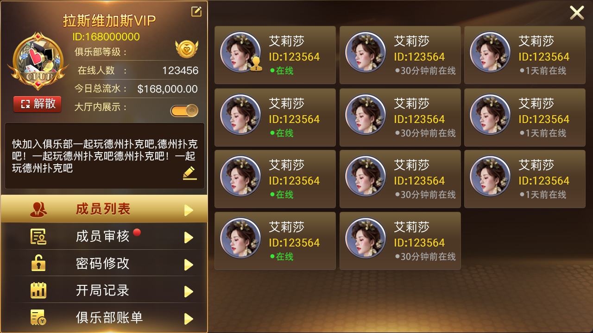

Repository Scope
Public files cover Hall and GM services, room and player lifecycles, MySQL access, mall, sign-in, goods, and service-fee interfaces.
The project depends on an external XGame/Tars environment. Screens document product features; selected Unity scenes do not constitute a complete client.
Verifiable Source Modules
Lobby and GM
HallServer, HallServant, GMServer, and request handling.
Rooms and Members
Sit-down, stand-up, offline, game-start, and membership flows.
Operations and Data
MySQL, mall, sign-in, goods, and service-fee protocols.
Poker Club Product Screens
Repository screenshots show club discovery, the join flow, membership review, accounting records, rankings, and table creation.


